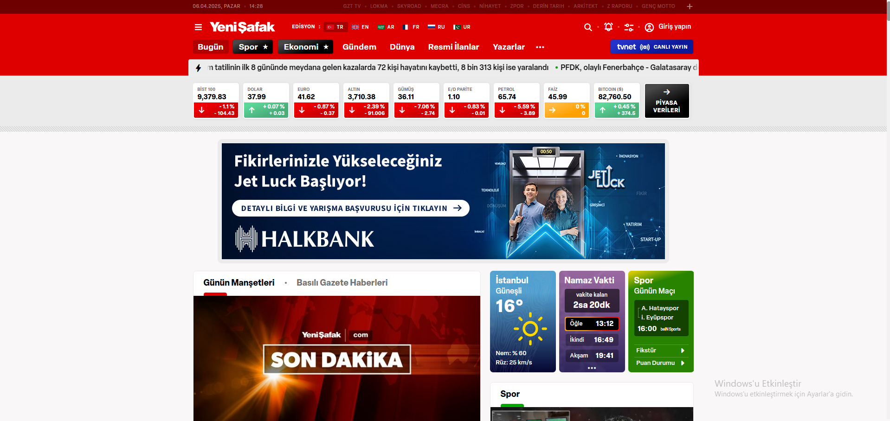
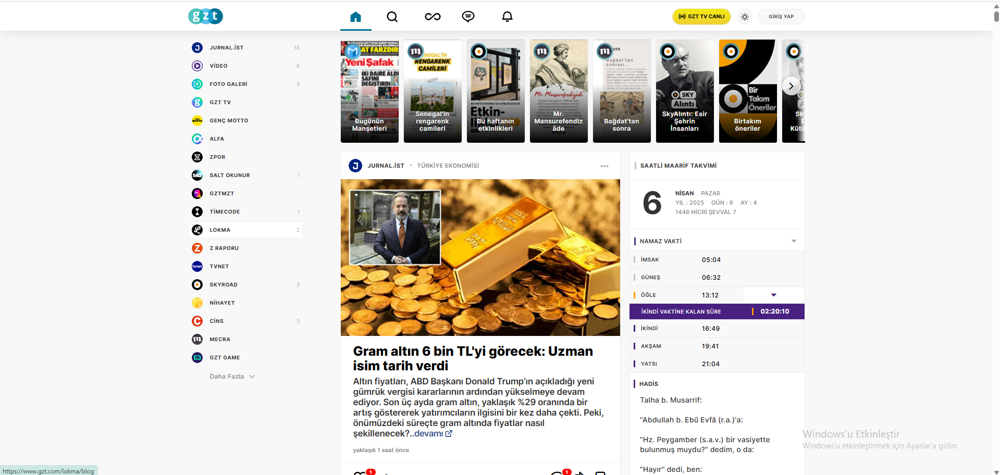
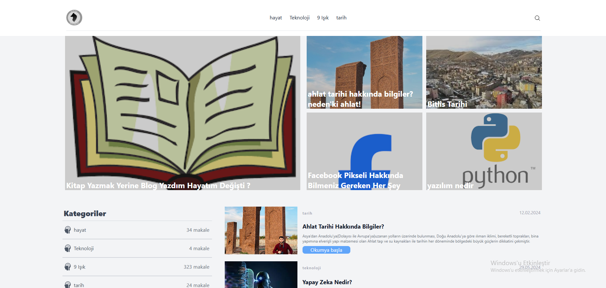
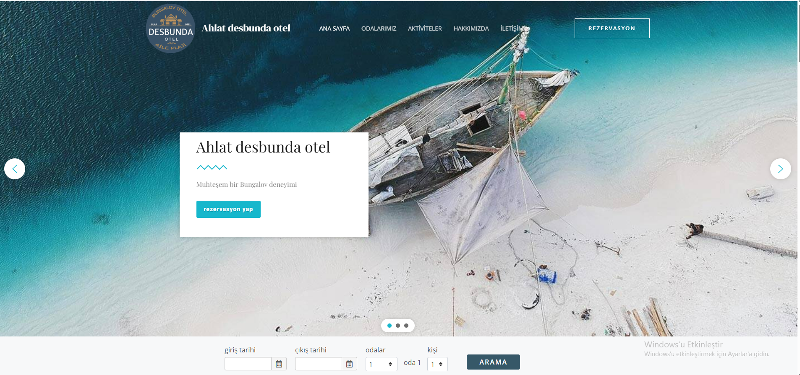
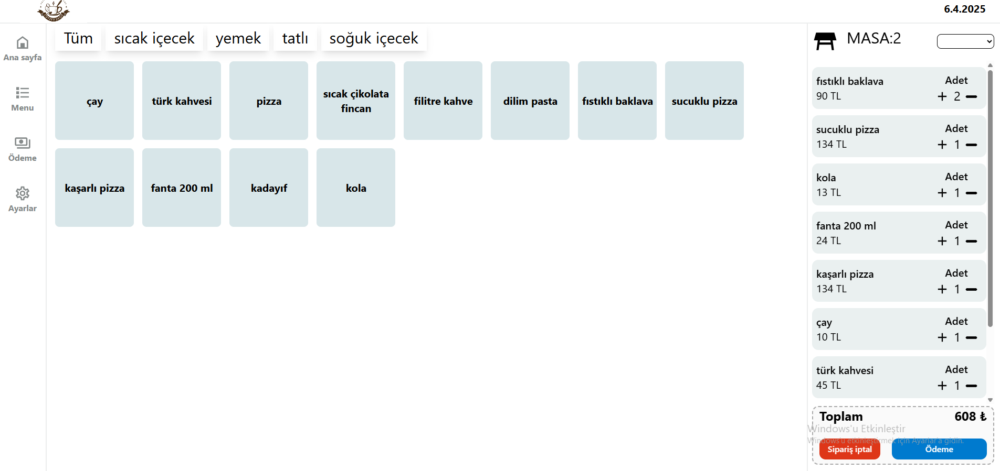
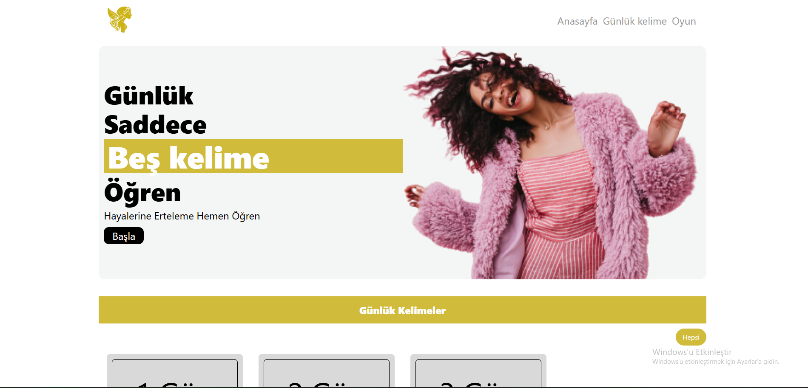

Arayüz Geliştirme
Figma veya tasarım sistemlerini, piksel hassasiyetinde ve farklı ekranlara uyumlu arayüzlere dönüştürme.
- Responsive tasarım
- Component mimarisi
- Design system
Merhaba, ben Uğur Şölen
Kullanımı kolay, hızlı ve her ekranda kusursuz çalışan dijital deneyimler geliştiriyorum. Vue, Nuxt ve React ile fikirleri güçlü ürünlere dönüştürüyorum.
<script setup>const developer = { name: 'Uğur Şölen', role: 'Frontend Developer', tools: ['Vue', 'Nuxt', 'React'], passion: true};const nextProject = build(idea);</script>➜ portfolio npm run dev
Local: http://localhost:3000/
Uzmanlık alanlarım
Tasarım fikrinden yayına kadar tüm frontend sürecini; kullanıcı deneyimi, kod kalitesi ve sürdürülebilirlik odağında ele alıyorum.
Figma veya tasarım sistemlerini, piksel hassasiyetinde ve farklı ekranlara uyumlu arayüzlere dönüştürme.
Hız, bulunabilirlik ve erişilebilirliği geliştirme sürecinin başından itibaren ürünün parçası yapma.
API, kimlik doğrulama, gerçek zamanlı veri ve içerik yönetimi ihtiyaçlarını güvenilir akışlarla birleştirme.
Teknoloji setim
Seçilmiş çalışmalar
Yayıncılık, eğitim, turizm ve işletme çözümleri için geliştirdiğim seçili çalışmalar.

Yayıncılık · Web deneyimi
Gündem ve haber içeriklerini farklı ekranlarda hızlı, okunabilir ve düzenli biçimde sunan yayın deneyimi.
Canlı siteyi incele
Medya · Web
Güncel içeriklerin sade bir akışta keşfedilebildiği, farklı ekranlara uyumlu medya deneyimi.
Projeyi aç
Eğitim · Platform
Eğitim içerikleri ile yönetim süreçlerini tek bir yapı içinde buluşturan admin panelli web uygulaması.
Projeyi aç
Turizm · Kurumsal web
Otelin konaklama deneyimini ve hizmetlerini ziyaretçilere açık bir görsel hiyerarşiyle sunan kurumsal site.
Projeyi aç
Özel çalışmaİşletme · Otomasyon
Kafe operasyonlarındaki müşteri ve sipariş akışını tek ekrandan yönetmek için tasarlanan otomasyon arayüzü.
Bağlantı paylaşılmıyor
Eğitim · Web uygulaması
Günlük öğrenme pratiğini kolaylaştıran ve içeriklerin yönetilebildiği admin panelli eğitim uygulaması.
Projeyi açÇalışma sürecim
Her projeyi anlaşılır adımlara bölüyor; tasarım, geliştirme ve iyileştirmeyi aynı ürün düşüncesinde birleştiriyorum.
İhtiyacı, kullanıcıyı ve ürünün çözmesi gereken asıl problemi netleştiririm.
İçerik hiyerarşisini ve etkileşimleri farklı ekranlar için birlikte kurgularım.
Yeniden kullanılabilir bileşenlerle temiz ve sürdürülebilir bir yapı geliştiririm.
Performans, erişilebilirlik ve gerçek kullanım geri bildirimleriyle ürünü parlatırım.
Hakkımda
Yazılımı yalnızca kod yazmak değil; gerçek bir ihtiyacı anlamak, sadeleştirmek ve güvenilir bir deneyime dönüştürmek olarak görüyorum.
Yönetim Bilişim Sistemleri ve Antropoloji eğitimlerimin kazandırdığı teknik ve insan odaklı bakışı, geliştirdiğim her ürüne taşıyorum.
Birlikte çalışalımAnadolu Üniversitesi
Teknoloji · İş süreçleri · Dijital dönüşümVan Yüzüncü Yıl Üniversitesi
İnsan · Kültür · AraştırmaKod laboratuvarı
Küçük etkileşimler, güçlü sistemler ve kullanıcıyı gülümseten detaylar burada buluşuyor.
Kullanıcı beklemeden içeriğe ve yapmak istediği işe ulaşabilmeli.
Sistemler çalışıyor
Notlar & yazılar
İletişim
Yeni bir ürün, mevcut bir arayüzün yenilenmesi veya frontend desteği için bana ulaşabilirsin.
uusolen@gmail.com